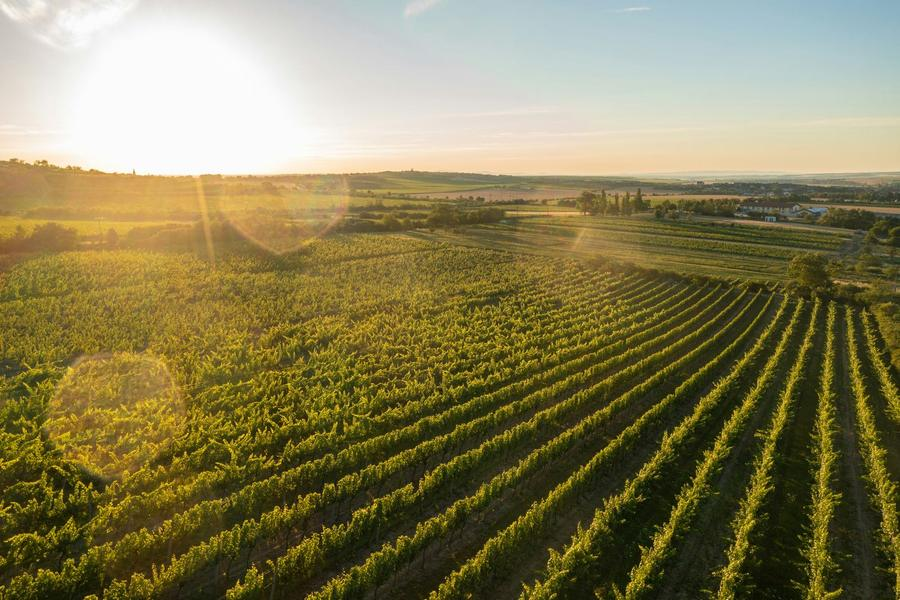
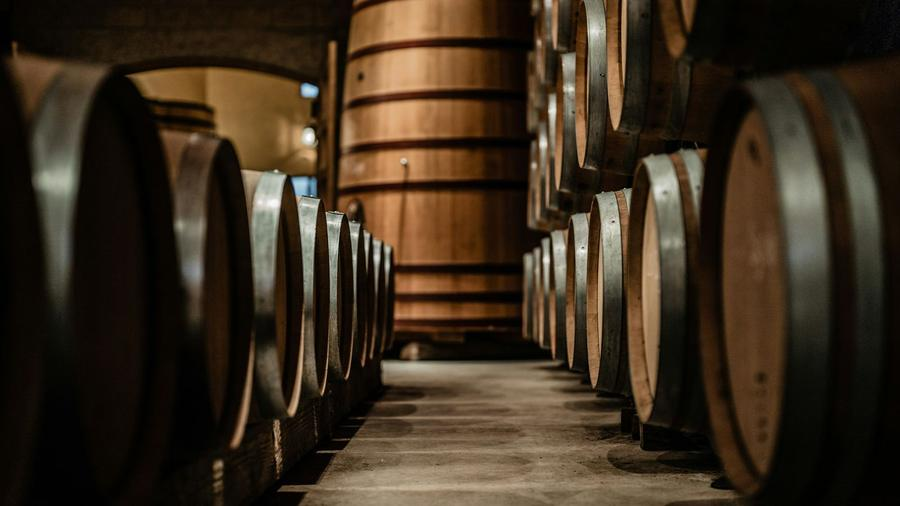
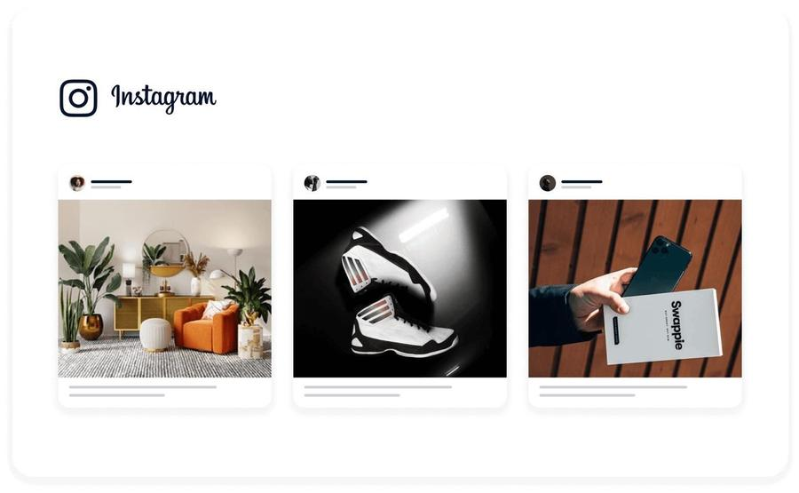

Le domaine, enfin réuni
Le logiciel viticole qui simplifie la gestion du domaine.
Mon Chai centralise vos parcelles, vendanges,
cuverie, stocks, ventes, clients et documents
dans un outil pensé avec les vignerons.
✓ Sans carte bancaire ✓ Formation offerte
Moins de ressaisie, plus de clarté sur votre domaine.
Mon Chai rassemble les informations clés de votre domaine :
parcelles, vendanges, cuverie, stocks, ventes et client;
pour éviter les doubles saisies et garder une vision claire de votre activité.
Centraliser
Toutes les données du domaine au même endroit.
Suivre
Volumes, stocks, clients et actions restent lisibles.
Gagner du temps
Moins de ressaisie, moins d’oublis, moins d’allers-retours.
Tout votre domaine, module par module.
Touchez un module pour voir ce qu’il couvre.
- Parcelles
- interventions
- informations clés du vignoble
- Encuvages
- pressurages
- rendements
- Assemblages
- soutirages
- élevage, analyses
- Planificateur
- embouteillage
- matières sèches
- Lots commerciaux
- inventaires
- valorisation
- Devis, factures
- livraisons
- caisse
- Segmentation
- historique achats
- prospection
- Déclarations
- douane, capsules
- registres
- Indicateurs
- coûts, marges
- vue globale
Assistant IA
Un assistant IA pensé pour les métiers du vin.
Mon Chai intègre un assistant conçu par une équipe française pour aider à retrouver une information, préparer une action ou synthétiser vos données.
- Interroger ses données en langage naturel.
- Préparer des synthèses clients, stocks ou cuvées.
- Repérer les actions à anticiper.
- Une IA locale et spécialisée, opérée sur nos serveurs en France et dimensionnée pour les usages réels des domaines.
Testez gratuitement Mon Chai
Rejoignez dès maintenant le programme bêta-test de Mon Chai
et profitez d’un accompagnement personnalisé
Du 15 juillet au 1er octobre 2026
Testez, contribuez, avancez avec nous.
Découvrez Mon Chai en avant-première et participez à la construction d’un outil réellement adapté aux besoins des domaines viticoles.
- Accès completUtilisez Mon Chai gratuitement pendant toute la phase de test.
- Accompagnement personnalisé offertTransfert de données, formation individuelle et webinaire de prise en main.
- Co-constructionVos retours nous aident à créer l’outil le plus utile pour vos besoins.
0 €Places limitées
Aucun moyen de paiement nécessaire pendant la phase de test
Ce qui est inclus :
- Accès complet au logiciel
- Accompagnement au démarrage
- 1 heure de formation individuelle offerte
- Transfert de données offert — d’une valeur de 300 € HT
- Assistance dédiée sous 24 h ouvrées
- 1 webinaire pour répondre à toutes vos questions
Et après le 1er octobre ?
Vous choisissez librement de poursuivre ou non.
Offre Primeurs
49 € HT / mois
Pendant 1 an, puis 59 € HT / mois
- Toutes les fonctionnalités incluses
- Sans engagement
- Mises à jour et assistance incluses
- +15 € HT par utilisateur supplémentaire
À propos


Mon Chai est né d’un constat simple : les domaines viticoles jonglent encore trop souvent entre des outils qui ne communiquent pas, avec beaucoup de ressaisie et peu de visibilité d’ensemble.
Après plusieurs années dans les logiciels de gestion viticole, Denis a conçu Mon Chai pour relier les principales activités d’un domaine au sein d’un même outil, de la vigne à la vente.
Laura l’a ensuite rejoint pour développer l’expérience utilisateur, le design, la communication et l’accompagnement des domaines.
Aujourd’hui, notre programme bêta-test nous permet de confronter Mon Chai au terrain et de co-construire les évolutions les plus utiles.
Logiciel développé et hébergé en France
Denis Berthelot & Laura HallaisCo-fondateurs de Mon Chai
Notre ambition :
construire un outil
utile, clair et adapté à
la réalité des domaines.
Vos questions fréquentes
À qui s’adresse Mon Chai ?
Aux domaines viticoles qui veulent centraliser leur gestion et mieux suivre leurs données, de la vigne à la vente, dans un seul outil. Que vous travailliez seul ou à plusieurs, Mon Chai couvre la vigne, la vendange, le chai, les stocks, les ventes, les clients et le déclaratif.
Comment fonctionne le programme de bêta-testeurs ?
Vous rejoignez Mon Chai en avant-première, gratuitement, jusqu’au 1er octobre 2026. Vous accédez à l’ensemble du logiciel et vous êtes accompagné à la prise en main. En échange, vos retours d’usage nous aident à prioriser les évolutions les plus utiles.
Peut-on importer nos données ?
Oui. Vos parcelles, clients et catalogues s’importent par fichier CSV, et nous réalisons la reprise de votre existant avec vous. Ce transfert de données est offert pendant le programme bêta.
Est-ce que Mon Chai est sécurisé ?
Oui. Mon Chai est développé et hébergé en France, avec des sauvegardes régulières et un accès protégé. Vos données restent les vôtres et sont exportables à tout moment.
Quels seront vos tarifs à la fin du programme bêta-testeurs ?
À partir du 1er octobre 2026, vous choisissez librement de poursuivre ou non. L’abonnement est de 49 € HT par mois la première année, puis 59 € HT par mois, sans engagement.
Quel accompagnement proposez-vous pour les domaines qui veulent tester le logiciel ?
Un accompagnement personnalisé est offert : reprise de vos données, une heure de formation individuelle et un webinaire de présentation, ainsi qu’une assistance dédiée tout au long de la bêta.
Qu’est-ce qui sera inclus dans l’abonnement ?
Tout le logiciel, sans module à empiler : la vigne, la vendange, le chai, les stocks, les ventes, les clients, le déclaratif, l’assistant IA et les tableaux de bord. Les mises à jour, l’assistance et l’hébergement en France sont compris.
Notre actualité

Ouverture du programme bêta-test Mon Chai
15 juillet – 1er septembre 2026
Rejoignez l’aventure Mon Chai : testez gratuitement le logiciel et partagez vos retours pour construire, ensemble, un outil vraiment adapté au quotidien des domaines viticoles.
Interview de Mon Chai au Winetech Coffee
15 juillet 2026 sur LinkedIn · Replay disponible sur YouTube
Découvrez l’histoire de Mon Chai, les convictions qui nous animent et les coulisses de l’ouverture de notre programme bêta-test.

Mon Chai au salon Vinitech-Sifel à Bordeaux
1er – 3 décembre 2026
Venez échanger avec notre équipe, découvrir le logiciel et assister à une démonstration de Mon Chai.
